10 Reglas de Hardening — Ubuntu¶
Manual de implementación paso a paso¶
Activo: Ubuntu 20.04.1 LTS con Zabbix Server
Entorno: laboratorio en el dispositivo con monitoreo de agentes y acceso remoto mediante Tailscale.
Orden correcto de implementación¶
-
1. Preparación y diagnóstico¶
Antes de realizar cambios, debemos crear respaldos de la configuración actual e identificar los servicios, puertos y usuarios del sistema. Comprobar también que el acceso al servidor funcione correctamente mediante consola y Tailscale.
-
2. Cuentas y privilegios¶
Revisar las cuentas de usuario, los permisos asignados y los privilegios administrativos antes de modificar los mecanismos de autenticación.
-
3. Contraseñas y bloqueo de cuentas¶
Configurar la política de contraseñas y los mecanismos de bloqueo ante intentos fallidos. Verificar la compatibilidad de los módulos PAM antes de aplicar cambios y realizar pruebas.
-
4. SSH y Tailscale¶
Confirmar la conectividad remota, configurar la autenticación mediante claves SSH y comprobar que funcione correctamente desde una segunda sesión. Solo después de verificar el acceso, restringir los métodos de autenticación que no sean necesarios.
-
5. Firewall UFW¶
Identificar los flujos de tráfico necesarios para SSH, Tailscale, Zabbix y los agentes antes de modificar las reglas del firewall. Aplicar únicamente las reglas necesarias y comprobar que la conexión remota continúe funcionando.
-
6. Actualizaciones¶
Realizar las actualizaciones del sistema durante una ventana de mantenimiento, con un respaldo disponible. Al finalizar, verificar el estado de los servicios y comprobar si es necesario reiniciar el servidor.
-
7. Servicios y puertos¶
Identificar los servicios activos y los puertos en escucha. Deshabilitar únicamente aquellos que hayan sido confirmados como innecesarios, verificando previamente sus dependencias para evitar afectar el funcionamiento del servidor.
-
8. Registros, AppArmor y auditoría¶
Revisar los registros del sistema y de los servicios principales. Comprobar el estado de AppArmor y configurar herramientas de auditoría según las necesidades de seguridad y monitoreo del servidor.
-
9. SNMP y puertos de Zabbix¶
Revisar la instalación y el uso de SNMP. Deshabilitarlo o eliminarlo únicamente si no es necesario. Ajustar las reglas de acceso a los puertos de Zabbix sin interrumpir la comunicación con los agentes, la recopilación de métricas ni el envío de alertas.
-
10. Validación final¶
Comprobar que SSH, Tailscale, MySQL, Zabbix Server y los agentes continúen funcionando correctamente. Verificar las reglas del firewall, revisar los registros y confirmar que las métricas y las alertas se generen como corresponde.
También se debe comprobar que los respaldos sean recuperables y que exista un procedimiento de recuperación ante posibles fallos.
-
¿Qué pasos no debiamos saltearnos?¶
-
Antes de modificar SSH: disponer de una segunda forma de acceso y probar la autenticación mediante claves.
- Antes de modificar UFW: conocer los puertos utilizados y revisar las reglas actuales. Una configuración incorrecta puede bloquear la conexión remota.
- Antes de modificar PAM: respaldar la configuración y verificar la compatibilidad de los módulos. Un error puede impedir los inicios de sesión.
- Antes de deshabilitar servicios: identificar sus dependencias y comprobar que Zabbix no los necesite.
- Antes de actualizar: contar con un respaldo y planificar una ventana de mantenimiento.
- Al finalizar: comprobar que los agentes continúen enviando datos, que las métricas se actualicen y que las alertas funcionen correctamente.
Importante: el hardening debe aplicarse de forma gradual. Después de cada cambio relevante, verificar el funcionamiento del sistema antes de continuar con el siguiente paso.
1. Preparación y diagnóstico inicial¶
Antes de realizar cambios, debemos conocer el estado del servidor y disponer de una forma de recuperación.
Paso 1.1. Verificar el sistema operativo¶
Ejecutar:
lsb_release -a
uname -r
hostnamectl

Estos comandos permiten identificar la versión de Ubuntu, el kernel y el nombre del servidor.
Paso 1.2. Registrar los servicios activos¶
systemctl --type=service --state=running

Paso 1.3. Registrar los puertos abiertos¶
sudo ss -tulpn

Paso 1.4. Comprobar el firewall¶
sudo ufw status verbose
sudo ufw status numbered

Paso 1.5. Comprobar Tailscale y Zabbix¶
tailscale status
systemctl status zabbix-server

Si utilizás MySQL:
systemctl status mysql

Si la instalación utiliza Apache:
systemctl status apache2

Los servicios pueden variar según la arquitectura instalada.
Paso 1.6. Crear una copia de seguridad de la configuración¶
Crear un directorio para guardar los respaldos:
sudo mkdir -p /root/hardening-backup
sudo chmod 700 /root/hardening-backup

Respaldar los archivos de configuración más importantes:
sudo tar -czpf ~/root/hardening-backup/configuracion-inicial.tar.gz \
/etc/ssh \
/etc/ufw \
/etc/pam.d \
/etc/security \
/etc/sysctl.conf \
/etc/sysctl.d \
/etc/zabbix

Si algún directorio no existe, revisar el mensaje de error y adaptar el comando a los componentes instalados.
Importante: este respaldo protege archivos de configuración, pero no reemplaza una copia de la base de datos de Zabbix ni una copia completa de la máquina virtual. Para disponer de una recuperación completa, crear también una instantánea de la VM y un respaldo de la base de datos.
2. Control 1 — Cuentas y privilegios¶
Objetivo: reducir el riesgo de accesos no autorizados y evitar que las cuentas dispongan de privilegios innecesarios.
Paso 2.1. Revisar las cuentas locales¶
getent passwd
.png)
Para ver las cuentas que utilizan una shell de inicio de sesión:
awk -F: '7! /(no login|false)$/ {print $1, $7}' /etc/passwd

Revisar cuáles son cuentas administrativas, cuáles corresponden a servicios y cuáles se utilizan para iniciar sesión.
No todas las cuentas del sistema representan usuarios humanos. Algunas son necesarias para ejecutar servicios.
Paso 2.2. Identificar los usuarios con privilegios administrativos¶
getent group sudo

También se puede revisar quién puede ejecutar comandos con privilegios elevados:
sudo -l

Ejecutar sudo -l desde la cuenta que se desea analizar. Para inspeccionar otra cuenta, utilizar un procedimiento de administración apropiado.
Paso 2.3. Revisar los usuarios con contraseña bloqueada o expirada¶
sudo passwd -S USUARIO
sudo chage -l USUARIO

Reemplazar USUARIO por la cuenta que se desea comprobar.
Paso 2.4. Eliminar privilegios innecesarios¶
Si se confirma que una cuenta no necesita privilegios administrativos, se puede quitar del grupo sudo:
sudo deluser USUARIO sudo
Antes de ejecutar el comando, comprobar que exista otra cuenta administrativa funcional.
Si una cuenta está obsoleta, primero verificar que no pertenezca a un servicio, tarea programada o proceso automatizado. No eliminar cuentas del sistema sin analizar sus dependencias.
Verificación¶
getent group sudo
sudo -l
Resultado esperado: solamente las cuentas autorizadas deben disponer de privilegios administrativos.
3. Control 2 — Política de contraseñas y bloqueo de intentos fallidos¶
Objetivo: dificultar los ataques de fuerza bruta y reducir el riesgo de contraseñas débiles.
Paso 3.1. Instalar el módulo de calidad de contraseñas¶
sudo apt update
sudo apt install libpam-pwquality -y

Paso 3.2. Configurar la calidad de las contraseñas¶
Crear una copia del archivo antes de modificarlo:
sudo cp /etc/security/pwquality.conf \
/etc/security/pwquality.conf.bak

Abrir la configuración:
sudo nano /etc/security/pwquality.conf

Configurar o ajustar estos parámetros:
minlen = 12
dcredit = -1
ucredit = -1
lcredit = -1
ocredit = -1
Significado:
minlen = 12: establece una longitud mínima de 12 caracteres.dcredit = -1: exige al menos un dígito.ucredit = -1: exige al menos una letra mayúscula.lcredit = -1: exige al menos una letra minúscula.ocredit = -1: exige al menos un carácter no alfanumérico.
Guardar con Ctrl + O, confirmar con Enter y salir con Ctrl + X.
Precaución: estos parámetros se aplican cuando el módulo está integrado en la política PAM correspondiente. Modificar el archivo no garantiza por sí solo que todos los mecanismos de autenticación los utilicen.
Paso 3.3. Verificar la integración de PAM¶
Comprobar la configuración:
grep -n "pam_pwquality" /etc/pam.d/common-password

Si no aparece ninguna coincidencia, revisar la configuración de PAM antes de continuar. No agregar líneas indiscriminadamente: una configuración incorrecta de PAM puede impedir la autenticación.
Paso 3.4. Configurar el bloqueo por intentos fallidos¶
Primero, comprobar si pam_faillock está disponible:
command -v faillock


Consultar la ayuda disponible:
man pam_faillock
La política debe definir, como mínimo:
- Número de intentos fallidos permitidos.
- Duración del bloqueo.
- Tiempo de observación de los intentos.
- Excepciones justificadas para cuentas de servicio o recuperación.
En sistemas compatibles con pam_faillock, los parámetros habituales incluyen deny, fail_interval y unlock_time. Por ejemplo, una política de prueba podría utilizar cinco intentos fallidos y un bloqueo temporal de 900 segundos.
La integración se realiza en PAM y depende de la versión y configuración de Ubuntu. Antes de editar los archivos de /etc/pam.d/, revisar la documentación de la versión instalada y respaldar los archivos originales.
No copiar bloques PAM de otra distribución sin verificar su compatibilidad.
Paso 3.5. Verificar el resultado¶
Si está disponible:
sudo faillock
Consultar los parámetros de calidad:
grep -E '^(minlen|dcredit|ucredit|lcredit|ocredit)' \
/etc/security/pwquality.conf


Realizar una prueba controlada con una cuenta de laboratorio, nunca con la única cuenta administrativa.
Resultado esperado: las contraseñas débiles deben rechazarse cuando corresponda y los intentos fallidos deben registrarse conforme a la política implementada.
4. Control 3 — Seguridad de red y acceso mediante Tailscale¶
Objetivo: proteger la administración remota del servidor y limitar el acceso a dispositivos autorizados.
Paso 4.1. Comprobar Tailscale¶
tailscale status
tailscale ip -4

El primer comando muestra los dispositivos visibles en la red. El segundo muestra las direcciones IPv4 de Tailscale del servidor.
Paso 4.2. Verificar el servicio¶
sudo systemctl status tailscaled

Si el servicio está instalado pero no está habilitado para iniciarse automáticamente:
sudo systemctl enable --now tailscaled
No ejecutar nuevamente la autenticación de Tailscale si el servidor ya está correctamente vinculado a la red.
Paso 4.3. Probar la conectividad remota¶
Desde un equipo autorizado:
tailscale ping IP_TAILSCALE_SERVIDOR

Reemplazar IP_TAILSCALE_SERVIDOR por la dirección real del servidor.
También se puede comprobar SSH:
ssh USUARIO@IP_TAILSCALE_SERVIDOR
Paso 4.4. Restringir los dispositivos autorizados¶
Desde la consola administrativa de Tailscale:
- Revisar los dispositivos vinculados.
- Identificar equipos desconocidos u obsoletos.
- Revisar los permisos de usuarios y dispositivos.
- Aplicar políticas de acceso para permitir únicamente las conexiones necesarias.
- Probar que el equipo administrativo autorizado conserve el acceso.
En este caso no tenemos dispositivos desconocidos ni obsoletos, los mismo para los usuarios ya que solo se encuentra el administrador de tailscale


No eliminar el dispositivo del servidor ni cambiar las políticas de acceso sin disponer de una vía de recuperación.
Resultado esperado: el servidor debe ser accesible desde los equipos autorizados, pero no desde dispositivos que carezcan de permisos.
5. Control 4 — Configuración del firewall UFW¶
Objetivo: reducir la superficie de ataque mediante el control del tráfico de red.
Paso 5.1. Revisar las reglas existentes¶
sudo ufw status numbered

Antes de cambiar reglas, identificar qué servicios requieren conexiones entrantes.
En un servidor Zabbix, los puertos pueden incluir:
| Puerto | Uso | Consideración |
|---|---|---|
| TCP 22 | SSH | Permitir únicamente desde orígenes autorizados. |
| TCP 80 | HTTP | Abrir solo si el servicio web lo necesita. |
| TCP 443 | HTTPS | Abrir solo si el servicio web lo necesita. |
| TCP 10051 | Zabbix server/trapper | Necesario para determinados flujos de agentes y proxies. |
| TCP 10050 | Agente Zabbix | Necesario en el servidor únicamente si recibe comprobaciones pasivas del agente local u otros agentes. |
| UDP 161 | SNMP | Abrir solo si este servidor necesita recibir consultas SNMP. |
La dirección del tráfico y el origen autorizado son tan importantes como el número del puerto.
Paso 5.2. Establecer políticas predeterminadas¶
Una vez verificado el acceso remoto y la necesidad de los servicios:
sudo ufw default deny incoming
sudo ufw default allow outgoing


Estas reglas deniegan las conexiones entrantes no autorizadas por reglas específicas y permiten el tráfico saliente.
Paso 5.3. Permitir SSH desde Tailscale¶
Si la administración SSH se realiza exclusivamente mediante Tailscale, se puede restringir el acceso a su interfaz:
sudo ufw allow in on tailscale0 to any port 22 proto tcp
Si se necesita limitarlo a un dispositivo específico, agregar también la dirección de origen autorizada.
No aplicar esta restricción sin comprobar que la interfaz tailscale0 exista y que la sesión SSH actual funcione a través de ella.
Paso 5.4. Permitir los puertos de Zabbix necesarios¶
Por ejemplo, si el servidor debe recibir conexiones de agentes activos:
sudo ufw allow in on tailscale0 to any port 10051 proto tcp
Si el servidor necesita recibir comprobaciones pasivas en su agente local:
sudo ufw allow in on tailscale0 to any port 10050 proto tcp
Aplicar la segunda regla únicamente si el flujo de monitoreo lo requiere.
No abrir automáticamente todos los puertos de la tabla. Si la interfaz web debe estar disponible solo por VPN, restringir también el acceso a HTTP/HTTPS a la interfaz y los orígenes apropiados.
Paso 5.5. Verificar y probar¶
sudo ufw status verbose
sudo ufw status numbered

Desde el equipo administrativo, comprobar SSH y la interfaz web de Zabbix. Confirmar también que los agentes continúen enviando datos.
Resultado esperado: solamente los servicios necesarios deben aceptar conexiones entrantes.
6. Control 5 — Actualizaciones de seguridad¶
Objetivo: corregir vulnerabilidades conocidas y mantener los paquetes del sistema actualizados.
Paso 6.1. Actualizar el índice de paquetes¶
sudo apt update
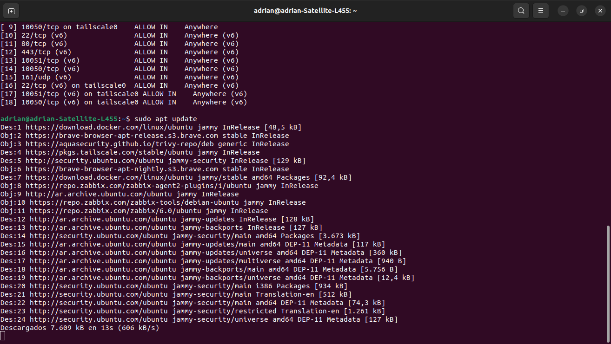
Paso 6.2. Revisar los paquetes pendientes¶
apt list --upgradable
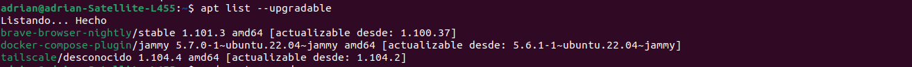
Examinar los paquetes disponibles antes de instalarlos, especialmente si afectan a Zabbix, MySQL, Apache, SSH o al kernel.
Paso 6.3. Aplicar las actualizaciones¶
Durante una ventana de mantenimiento:
sudo apt upgrade
Leer las operaciones que propone APT y confirmar cuando corresponda. No automatizar la aceptación de cambios importantes sin revisarlos.
Paso 6.4. Revisar si hace falta reiniciar¶
if [ -f /var/run/reboot-required ]; then
cat /var/run/reboot-required
else
echo "No se detectó el indicador de reinicio requerido."
fi
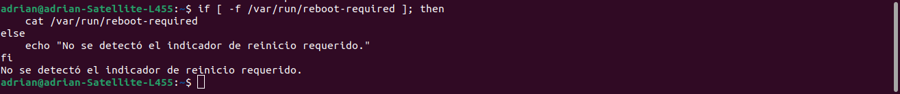
Si hace falta reiniciar, verificar primero que exista un respaldo y que sea posible recuperar el servidor.
Paso 6.5. Comprobar los servicios¶
Después de actualizar:
systemctl --failed
systemctl status zabbix-server
systemctl status tailscaled
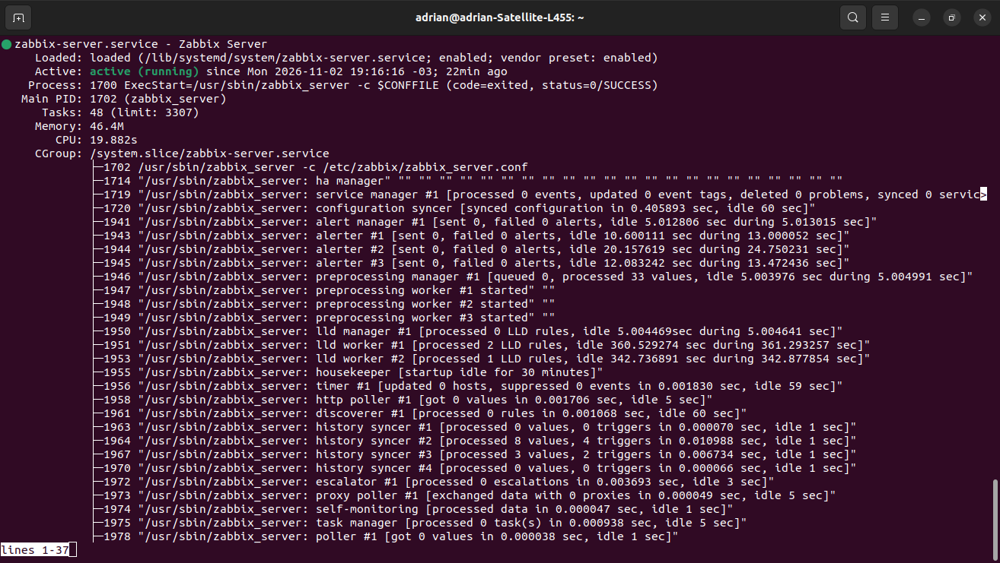
Verificar también la base de datos y el servidor web si corresponden.
Resultado esperado: el sistema queda actualizado sin perder la conectividad ni el funcionamiento de Zabbix.
7. Control 6 — Endurecimiento de SSH¶
Objetivo: reducir el riesgo de acceso remoto no autorizado.
Paso 7.1. Comprobar el servicio SSH¶
sudo systemctl status ssh
Si SSH no está instalado y es necesario para la administración:
sudo apt install openssh-server -y
Paso 7.2. Generar una clave SSH en el equipo cliente¶
Desde Windows PowerShell:
ssh-keygen -t ed25519
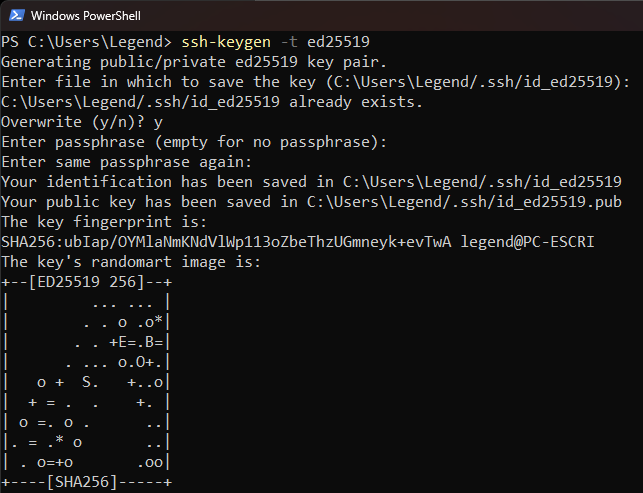
Seguir las instrucciones y proteger la clave privada con una frase de contraseña cuando sea posible.
Paso 7.3. Instalar la clave pública en Ubuntu¶
Copiar el contenido del archivo público id_ed25519.pub del cliente y agregarlo a ~/.ssh/authorized_keys de la cuenta que se utilizará para conectarse.
En Ubuntu, con esa cuenta:
mkdir -p ~/.ssh
chmod 700 ~/.ssh
nano ~/.ssh/authorized_keys
Pegar la clave pública completa en una sola línea, guardar y salir.
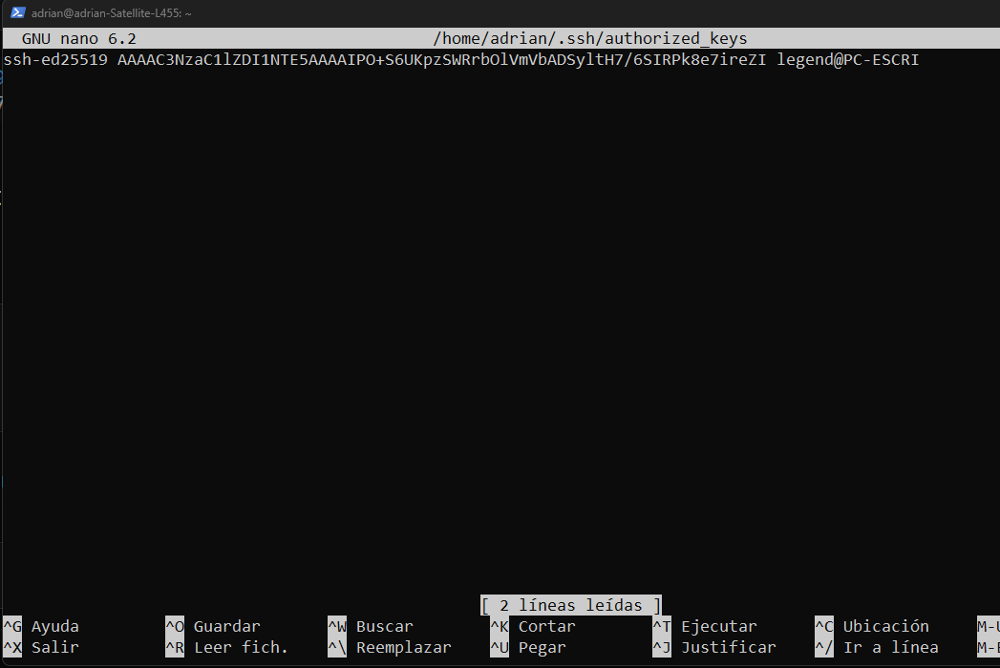
Luego:
chmod 600 ~/.ssh/authorized_keys
Comprobar que la clave funcione antes de modificar la política de autenticación.
Paso 7.4. Revisar la configuración efectiva¶
sudo sshd -T | grep -E \
'^(permitrootlogin|pubkeyauthentication|passwordauthentication|maxauthtries)'
Paso 7.5. Crear un archivo de configuración de hardening¶
Respaldar la configuración principal:
sudo cp /etc/ssh/sshd_config \
/etc/ssh/sshd_config.hardening-backup
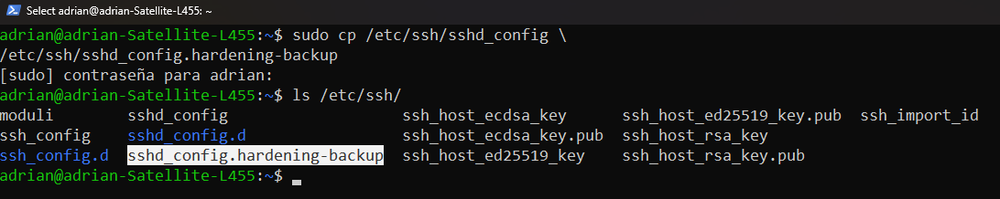
Si la versión de OpenSSH admite archivos de configuración adicionales, crear un archivo independiente:
sudo nano /etc/ssh/sshd_config.d/00-hardening.conf
Ejemplo de configuración:
PermitRootLogin no
PubkeyAuthentication yes
MaxAuthTries 3
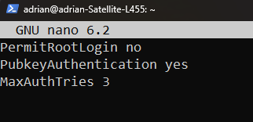
No establecer PasswordAuthentication no hasta confirmar que la autenticación por clave funciona y que existe un acceso alternativo de recuperación. Si se decide deshabilitar contraseñas, agregar esa directiva solo después de comprobar la configuración efectiva y la autenticación de la cuenta administrativa.
Paso 7.6. Validar antes de reiniciar¶
sudo sshd -t
Si el comando no informa errores, revisar los valores efectivos:
sudo sshd -T | grep -E \
'^(permitrootlogin|pubkeyauthentication|passwordauthentication|maxauthtries)'
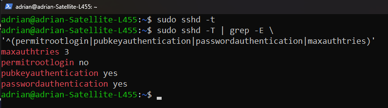
Mantener abierta la sesión SSH actual. Abrir una segunda terminal y probar una conexión nueva.
Si todo funciona, recargar el servicio:
sudo systemctl reload ssh
Resultado esperado: el acceso administrativo continúa funcionando y se reducen los métodos de autenticación innecesarios.
8. Control 7 — Servicios y aplicaciones innecesarios¶
Objetivo: reducir los servicios expuestos y evitar que se ejecuten componentes que no cumplen ninguna función en el servidor.
Paso 8.1. Inventariar los servicios activos¶
systemctl --type=service --state=running
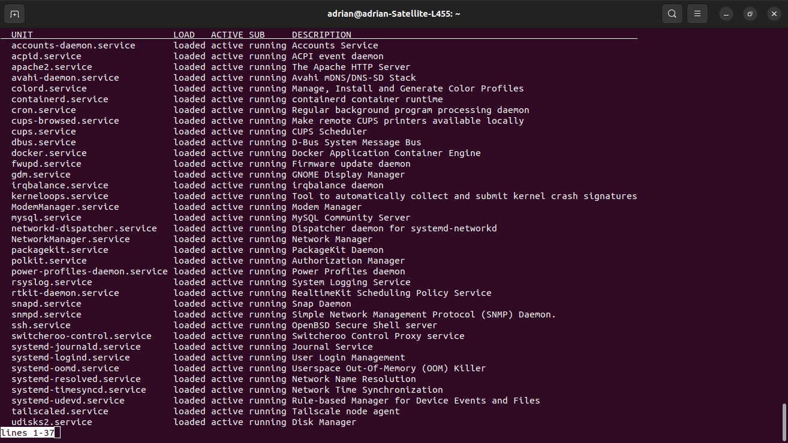
Paso 8.2. Identificar los puertos asociados¶
sudo ss -tulpn
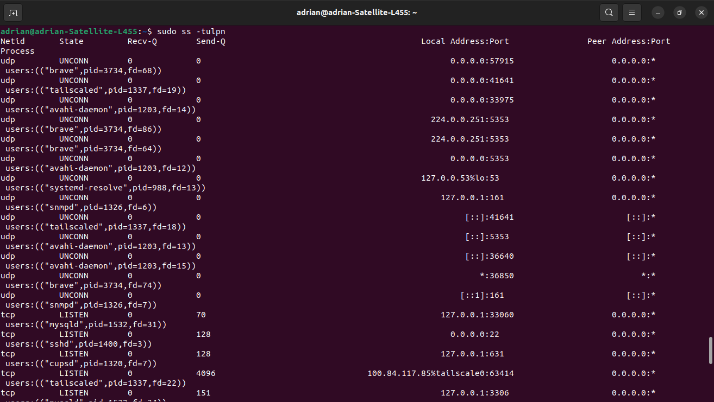
Relacionar cada puerto con su proceso y servicio correspondiente.
Paso 8.3. Comprobar si un servicio está habilitado¶
Para un servicio concreto:
systemctl is-enabled NOMBRE_SERVICIO
systemctl status NOMBRE_SERVICIO
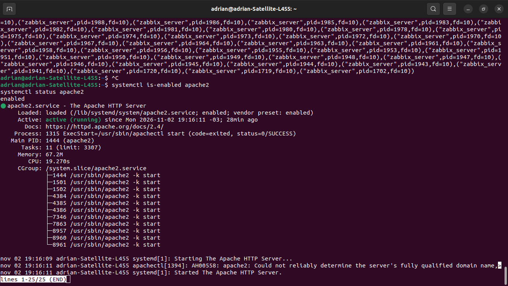
Reemplazar NOMBRE_SERVICIO por el nombre real.
Paso 8.4. Detener un servicio confirmado como innecesario¶
Primero detenerlo temporalmente:
sudo systemctl stop NOMBRE_SERVICIO
Comprobar que no se haya afectado el funcionamiento del servidor. Si el servicio no es necesario y se confirma que no tiene dependencias importantes, deshabilitar su inicio automático:
sudo systemctl disable NOMBRE_SERVICIO
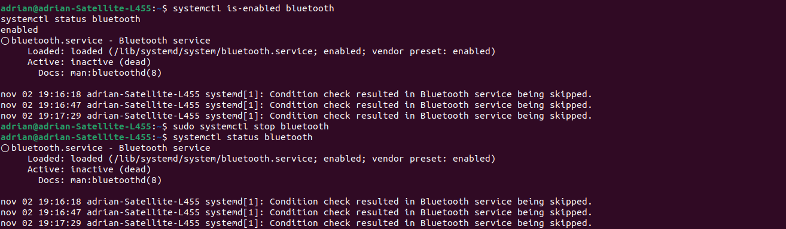
No detener ni deshabilitar servicios de Zabbix, MySQL, Apache, SSH o Tailscale sin comprobar primero su función.
Paso 8.5. Verificar el resultado¶
systemctl --failed
sudo ss -tulpn
Resultado esperado: se mantienen activos los servicios necesarios y se documenta la justificación de cada servicio deshabilitado.
9. Control 8 — Registros, AppArmor y auditoría¶
Objetivo: mejorar la detección de eventos, conservar evidencias y facilitar el diagnóstico de incidentes.
Paso 9.1. Revisar los mensajes de advertencia del sistema¶
sudo journalctl -p warning -b --no-pager
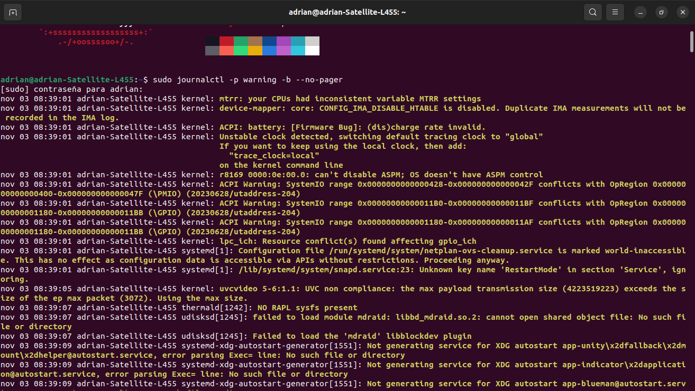
Para consultar los mensajes de SSH:
sudo journalctl -u ssh --since today --no-pager

Para revisar los mensajes del servidor Zabbix:
sudo journalctl -u zabbix-server --since today --no-pager

La ubicación de los registros puede variar según la instalación y la configuración de los servicios.
Paso 9.2. Comprobar la configuración de AppArmor¶
sudo aa-status
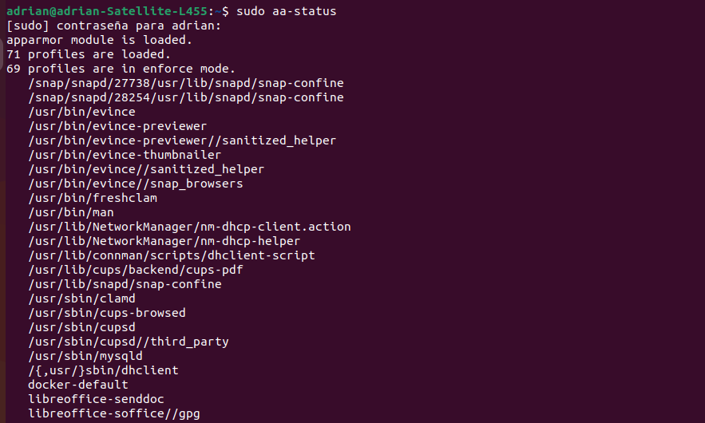
Si AppArmor está instalado, comprobar que esté activo y revisar los perfiles en uso.
No deshabilitar AppArmor para solucionar un problema sin identificar primero qué perfil lo está causando.
Paso 9.3. Evaluar auditd¶
Comprobar si está instalado:
dpkg -l auditd
Si se decide incorporar auditoría adicional:
sudo apt install auditd audispd-plugins -y
sudo systemctl enable --now auditd
Verificar su estado:
sudo systemctl status auditd
 Consultar los eventos recientes:
Consultar los eventos recientes:
sudo ausearch -m USER_LOGIN --start today

La disponibilidad de tipos de eventos depende de las reglas de auditoría activas. Instalar auditd no configura automáticamente todas las reglas necesarias para registrar cualquier actividad.
Paso 9.4. Integrar los eventos con Zabbix¶
Definir qué eventos son importantes para el laboratorio, por ejemplo:
- Intentos de inicio de sesión fallidos.
- Detención inesperada de servicios.
- Pérdida de conectividad con agentes.
- Uso elevado de CPU o memoria.
- Problemas de disponibilidad del servidor.
Crear los ítems, triggers y acciones correspondientes, y comprobar que las alertas lleguen al medio de notificación configurado.
Resultado esperado: los registros relevantes pueden consultarse y los eventos críticos generan alertas verificables.
10. Control 9 — SNMP y puertos de Zabbix¶
Objetivo: evitar servicios innecesarios y limitar el acceso a los componentes de monitoreo.
Paso 10.1. Comprobar si SNMP está instalado en el servidor¶
dpkg -l | grep -E 'snmp|snmpd'
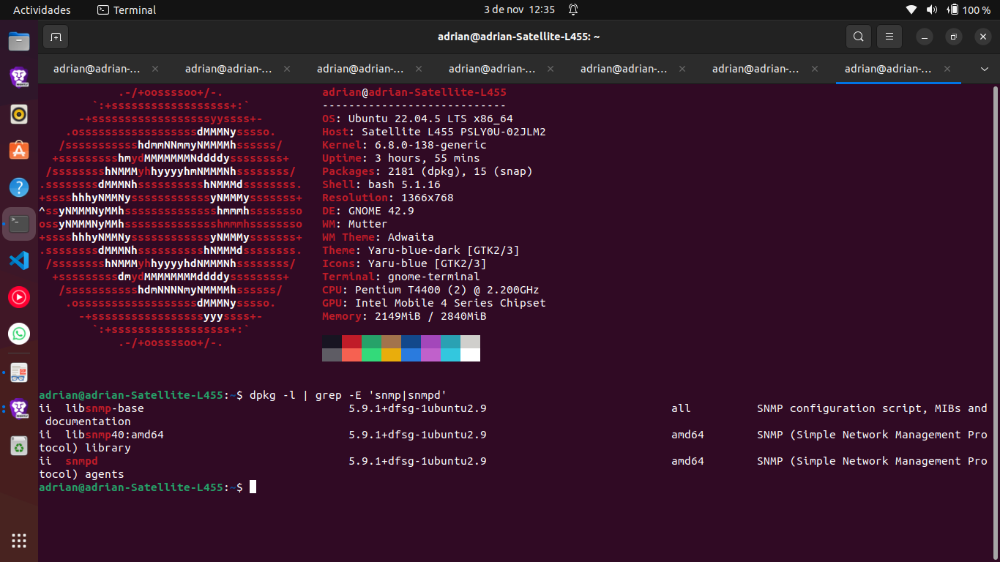
Paso 10.2. Determinar si el servidor necesita ejecutar SNMP¶
Si el servidor Zabbix solo consulta dispositivos remotos y no debe responder consultas SNMP, es posible que no necesite el servicio snmpd.
Antes de eliminarlo, comprobar si otro proceso depende de él.
Si se confirma que no es necesario, detenerlo y deshabilitar su inicio:
sudo systemctl disable --now snmpd
Solo si se confirma que no se utiliza y se desea eliminar el paquete:
sudo apt remove snmpd
No ejecutar estos comandos en un dispositivo Linux que sí deba responder a consultas SNMP.
Paso 10.3. Restringir el acceso al servidor Zabbix¶
Comprobar las reglas actuales:
sudo ufw status numbered
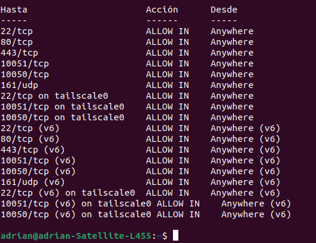
Revisar que TCP 10051 solo esté accesible desde las redes o dispositivos que necesiten enviar datos al servidor. Si se utiliza Tailscale, puede limitarse la regla a esa interfaz.
Por ejemplo:
sudo ufw allow in on tailscale0 to any port 10051 proto tcp
Esta regla es ilustrativa: si ya existe una regla más amplia, hay que identificarla y retirarla de forma controlada después de confirmar la conectividad.
Paso 10.4. Revisar los puertos de los agentes¶
TCP 10050 se utiliza para las comprobaciones pasivas de los agentes. Si el servidor no necesita recibir conexiones de ese tipo, no debe mantenerse una regla de entrada innecesaria.
Para comprobar los puertos:
sudo ss -tulpn
sudo ufw status verbose
Paso 10.5. Verificar el monitoreo¶
Desde la interfaz de Zabbix, comprobar que los hosts necesarios continúen enviando métricas y que no aparezcan problemas por pérdida de conectividad.
Resultado esperado: los puertos de monitoreo están disponibles únicamente cuando son necesarios y se limita el acceso a los orígenes autorizados.
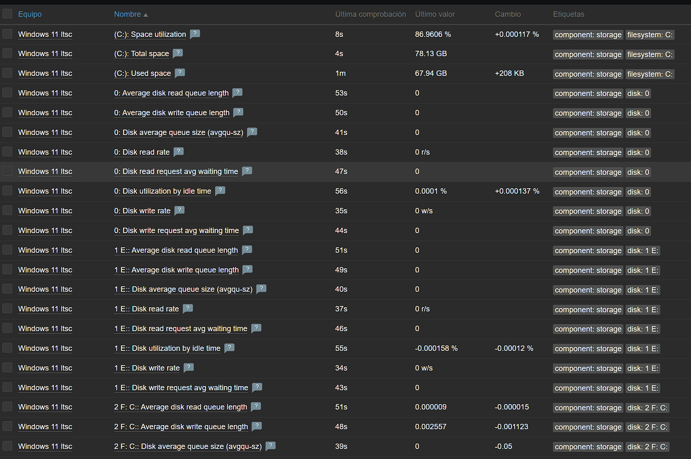
11. Control 10 — Seguridad de la máquina virtual y copias de seguridad¶
Objetivo: proteger la plataforma que ejecuta Ubuntu Server y permitir la recuperación del servicio ante errores o incidentes.
Paso 11.1. Revisar el acceso al hipervisor¶
En el equipo anfitrión:
- Identificar quién puede iniciar sesión en el hipervisor.
- Restringir los permisos de administración a los usuarios autorizados.
- Evitar exponer la interfaz de administración del hipervisor a redes públicas.
- Mantener actualizado el software de virtualización.
- Proteger las credenciales administrativas.
Los pasos concretos dependen del hipervisor utilizado, como VirtualBox, VMware o Proxmox.
Paso 11.2. Crear una instantánea de la máquina virtual¶
Antes de cambios importantes:
- Comprobar que los servicios estén estables.
- Crear una instantánea desde el hipervisor.
- Asignar un nombre descriptivo, por ejemplo
pre-hardening. - Registrar la fecha y los cambios que se realizarán.
Una instantánea facilita la recuperación de un estado anterior, pero no sustituye un respaldo independiente.
Paso 11.3. Respaldar la configuración de Zabbix¶
Los archivos de configuración pueden copiarse mediante el respaldo de /etc/zabbix creado en la preparación.
Para revisar su contenido:
sudo tar -tzf /root/hardening-backup/configuracion-inicial.tar.gz
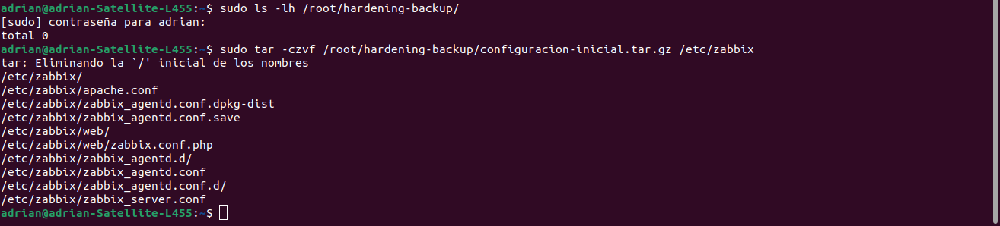
El archivo puede contener datos sensibles. Mantenerlo con permisos restrictivos y no publicarlo en el repositorio de documentación.
Paso 11.4. Respaldar la base de datos¶
Si la instalación utiliza MySQL, primero confirmar el motor y la base de datos:
systemctl status mysql
El respaldo debe realizarse con credenciales que tengan permisos suficientes. No colocar contraseñas directamente en el historial de comandos.
Ejemplo para una base de datos llamada zabbix:
sudo mysqldump --single-transaction zabbix \
> /root/hardening-backup/zabbix.sql
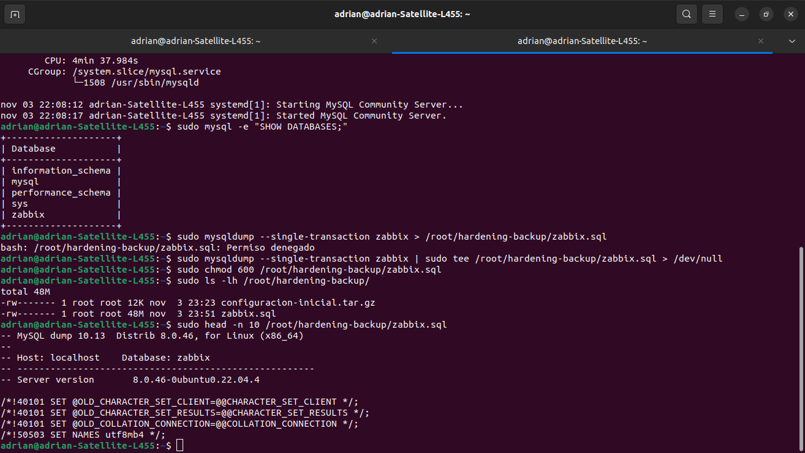
Este comando solo funcionará si la autenticación configurada permite la conexión con esas opciones. Si el acceso requiere credenciales específicas, utilizar el método seguro correspondiente a la instalación.
Proteger el archivo:
sudo chmod 600 /root/hardening-backup/zabbix.sql
Si la base de datos utiliza un motor diferente, adaptar el procedimiento al motor instalado.
Paso 11.5. Verificar el respaldo¶
Comprobar que los archivos existan y tengan un tamaño razonable:
sudo ls -lh /root/hardening-backup/
Una copia solo puede considerarse confiable después de verificar su integridad y probar la restauración en un entorno controlado.
Resultado esperado: existe una copia recuperable de la configuración y de la base de datos, almacenada de forma segura y separada de la documentación pública.
12. Verificación final del hardening¶
Una vez completados los controles, ejecutar las siguientes comprobaciones.
12.1. Estado de los servicios¶
systemctl --failed
systemctl status zabbix-server
systemctl status tailscaled
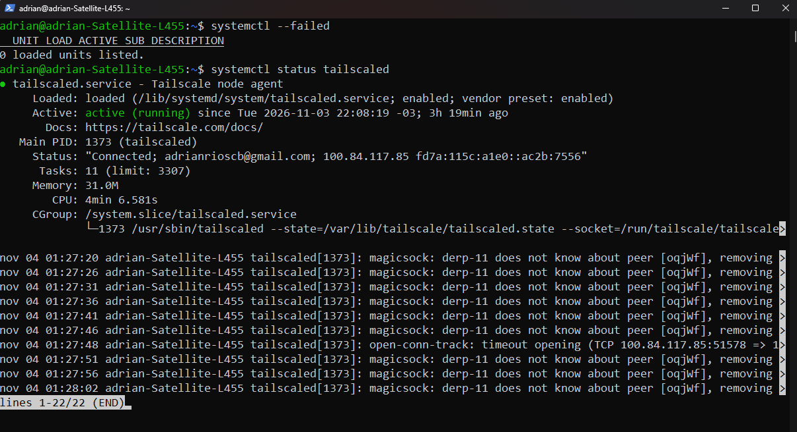
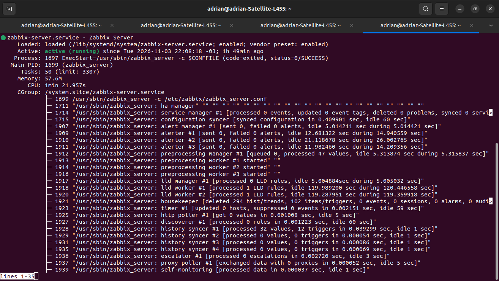
Comprobar MySQL y Apache si están instalados.
12.2. Estado del firewall¶
sudo ufw status verbose
sudo ufw status numbered
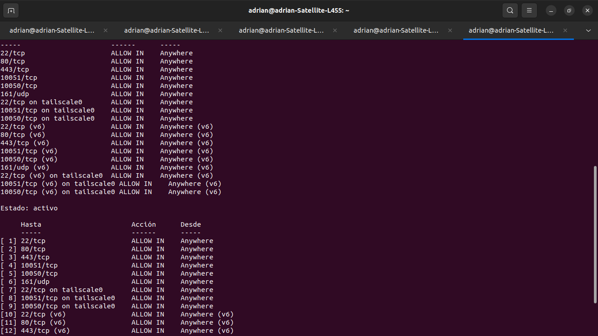
12.3. Estado de SSH¶
sudo sshd -t
sudo sshd -T | grep -E \
'^(permitrootlogin|pubkeyauthentication|passwordauthentication|maxauthtries)'
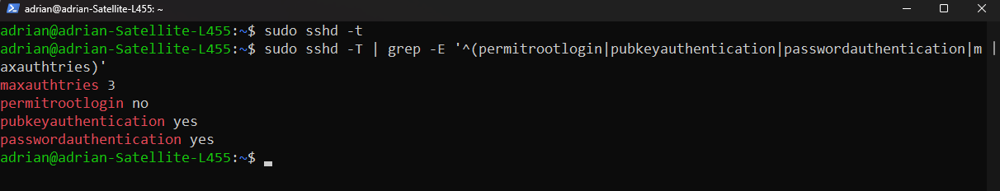
12.4. Estado de la red¶
tailscale status
sudo ss -tulpn
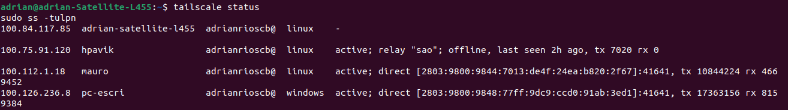
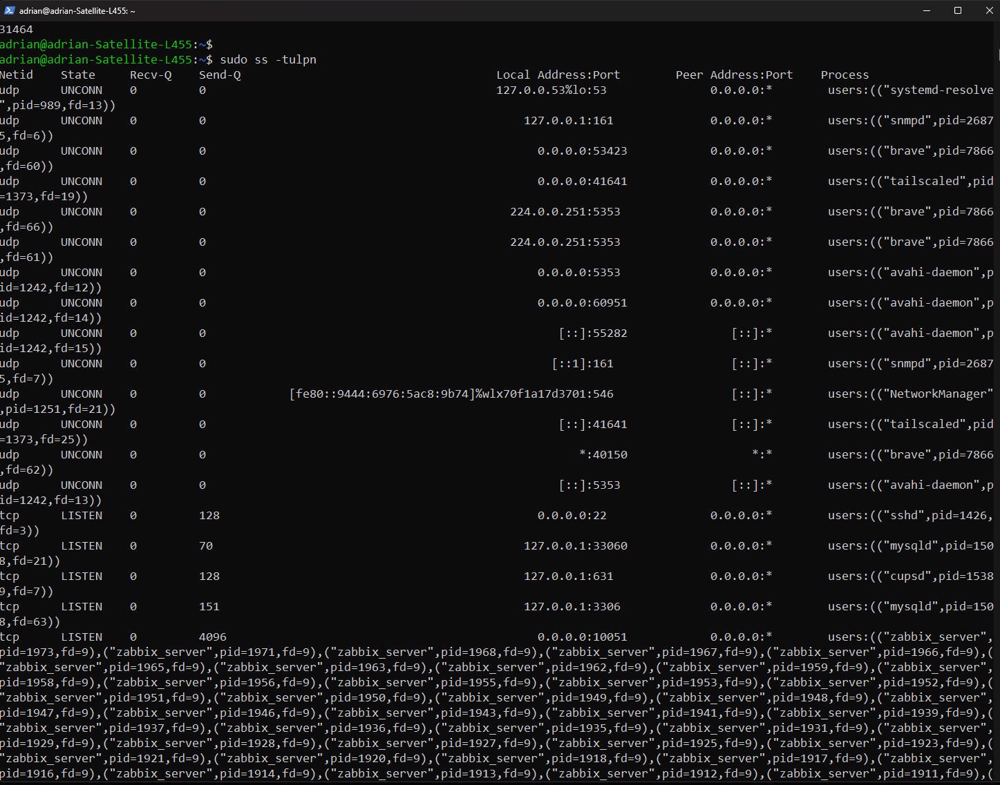
12.5. Registros recientes¶
sudo journalctl -p warning -b --no-pager
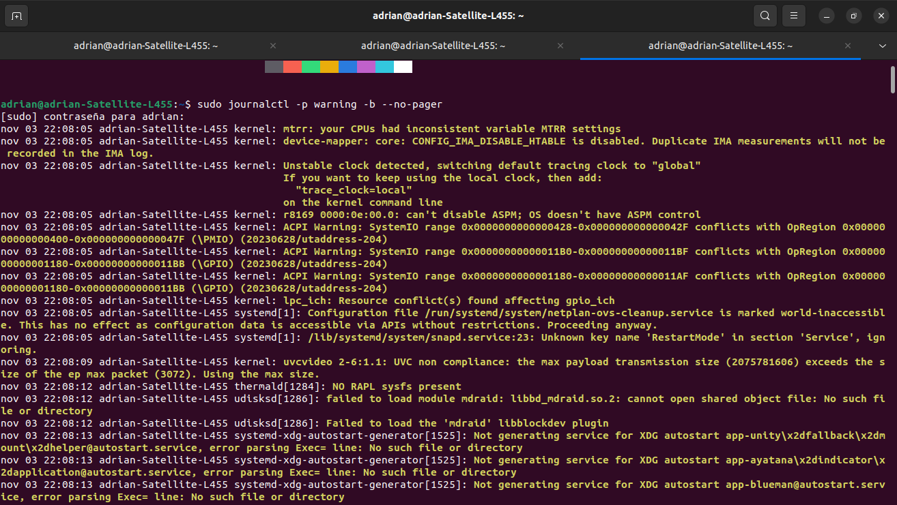
12.6. Comprobar Zabbix¶
Desde la interfaz web:
- Revisar la disponibilidad de los hosts.
- Comprobar que los agentes sigan enviando métricas.
- Verificar los ítems y triggers críticos.
- Probar las notificaciones por correo electrónico y Telegram.
- Confirmar que no existan problemas provocados por los cambios de firewall o SSH.
13. Registro de implementación¶
Completar la siguiente tabla con el estado real de cada control:
Matriz de controles de hardening¶
La siguiente tabla resume los controles de seguridad implementados en el servidor y las evidencias utilizadas para verificar su configuración.
| Control | Estado | Evidencia | Observaciones |
|---|---|---|---|
| Cuentas y privilegios | Aplicado | Revisión de usuarios y permisos del sistema. | Se aplicó el principio de mínimo privilegio. |
| Contraseñas y bloqueo | Aplicado | Configuración de políticas de autenticación y límites de intentos. | Se buscó reducir los accesos no autorizados. |
| Tailscale y red | Aplicado | Pruebas de conectividad mediante direcciones Tailscale. | Se implementó la comunicación segura entre los equipos del laboratorio. |
| Firewall UFW | Aplicado | sudo ufw status verbose |
Firewall activo, con conexiones entrantes bloqueadas por defecto y los puertos necesarios habilitados. |
| Actualizaciones | Aplicado | Actualización de paquetes mediante APT. | Se mantienen los paquetes del sistema actualizados. |
| SSH | Aplicado | Revisión de sshd_config y parámetros efectivos de SSH. |
Se limitaron los intentos de autenticación y el acceso directo de root. |
| Servicios | Aplicado | Revisión de servicios activos mediante systemctl. |
Se verificaron los servicios necesarios para el funcionamiento del servidor. |
| Registros y auditoría | Aplicado | Revisión de registros del sistema y /var/log/auth.log. |
Se utilizan los registros para detectar intentos de acceso fallidos. |
| SNMP y Zabbix | Aplicado | Monitoreo de agentes Zabbix y dispositivo SNMP simulado. | Se supervizaron equipos, métricas y eventos desde una plataforma centralizada (zabbix). |
| Plataforma y copias | Pendiente | Verificación de copias de seguridad y pruebas de restauración. | Se debe generar y comprobar una copia de seguridad de la configuración y los datos. |
14. Criterios de éxito¶
El proyecto puede considerarse implementado cuando se compruebe que:
- Los usuarios y privilegios están revisados.
- La política de contraseñas y el bloqueo están configurados y probados.
- SSH funciona con los métodos de autenticación previstos.
- UFW permite únicamente el tráfico necesario.
- Las actualizaciones se aplicaron de forma controlada.
- No hay servicios innecesarios expuestos.
- Los registros y las alertas funcionan.
- Zabbix continúa monitoreando los equipos requeridos.
- Existen respaldos verificados.
- Los riesgos residuales y los controles pendientes están documentados.